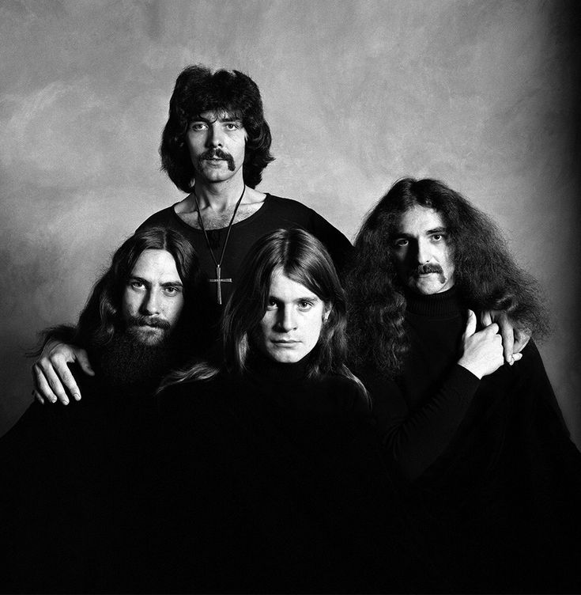

Heavy metal is a genre of rock music that developed in the late 1960s and early 1970s. It is characterized by heavily distorted guitars, powerful drumming, and dark or fantastical themes. The genre grew out of blues rock and psychedelic rock, with bands such as Black Sabbath, Deep Purple, and Led Zeppelin playing important roles in its development.
Heavy metal took shape in Birmingham, England, when Black Sabbath moved from blues rock toward a darker, heavier sound influenced by horror films. The band, originally called Earth, noticed crowds gathering at a cinema across from their rehearsal space to watch scary movies. They decided to create music that evoked the same sense of fear.
The band's name and signature song were inspired by the 1963 Italian horror film Black Sabbath, directed by Mario Bava and starring Boris Karloff. Bassist Geezer Butler was also inspired to write the song after having a nightmare about a black figure standing at the foot of his bed. Vocalist Ozzy Osbourne then imagined the figure as a demon.

Black Sabbath
Released in 1970, the resulting track featured guitarist Tony Iommi's down-tuned, dissonant riff, which uses the interval known as the diabolus in musica, or "the Devil's interval." The combination of occult imagery, slow tempos, and crushing instrumentation helped establish the template for heavy metal.
The most iconic heavy metal bands include Led Zeppelin, Black Sabbath, Iron Maiden, Judas Priest, Metallica, Megadeth, Slayer, Pantera, Motörhead, Dio, Slipknot, and Avenged Sevenfold.
The most iconic heavy metal songs include Stairway to Heaven , War Pigs , Paranoid , Iron Man , Enter Sandman, Master of Puppets, Symphony of Destruction, Walk, Ace of Spades, Holy Diver, Duality, and Bat Country.